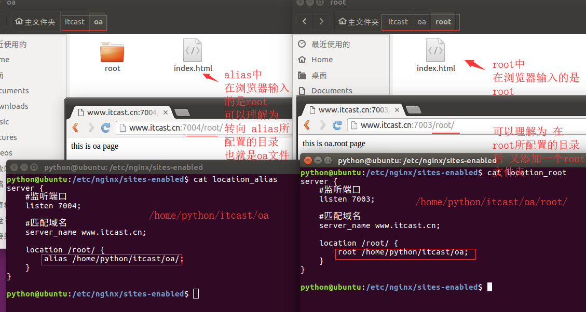

location常见动作
在location内部常用的功能属性非常多，常见的基本属性、临时跳转、访问控制、目录列表等。
基本属性
location / {
root /var/www/html; # 指定响应请求的文件所在路径
index index.php index.html index.htm; # 指定响应请求的默认文件名称
expires 7d; # 指定响应请求的文件过期时间，一般用于静态文件
try_files $uri $uri/ =404; # 如果root指定的路径下有查找的文件，就返回，否则报错
}
临时跳转
location = /test/ {
return 302 http://www.itheima.com/; # 访问旧url的时候，临时跳转到新url，两个url均不失效
}
目录列表
server {
#监听端口
listen 7002;
#匹配域名
server_name www.itcast.cn;
location / {
root /home/python/itcast;
index index.html;
# 开启目录自动索引
autoindex on;
# 默认on，显示文件确切大小(bytes)。off表示显示文件的大概大小(kB/MB/...)
autoindex_exact_size off;
# 默认off，显示的文件时间为GMT时间。on表示显示文件的服务器时间
autoindex_localtime on;
}
}
root VS alias
root和alias所起的作用都是指定响应请求所用文件的路径，只是他们有些许的区别
root 表示location匹配内容的相对路径
alias表示一个绝对路径,而且必须以"/"结尾，否则找不到文件
一般情况下，在location /中配置root，在location /other中配置alias
效果一：
在/etc/nginx/sites-enabled创建location_root配置文件
server {
#监听端口
listen 7003;
#匹配域名
server_name www.itcast.cn;
location /root/ {
root /home/python/itcast/oa;
}
}
效果二：
在/etc/nginx/sites-enabled创建location_alias配置文件
server {
#监听端口
listen 7004;
#匹配域名
server_name www.itcast.cn;
location /root/ {
alias /home/python/itcast/oa/;
}
}
效果对比
